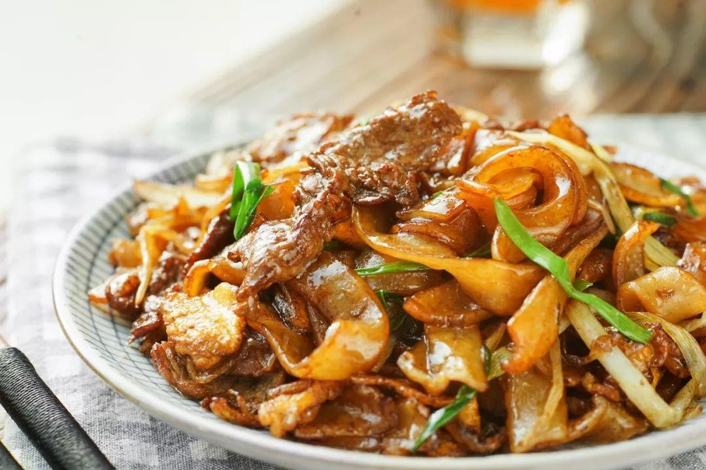
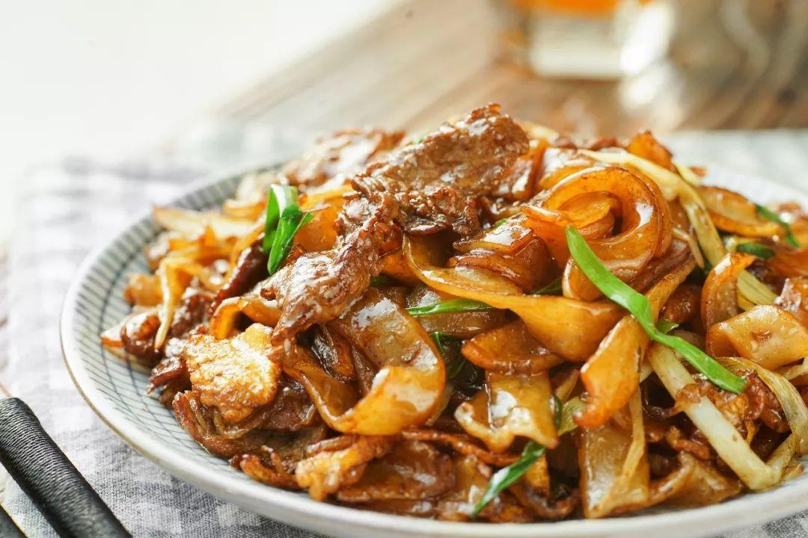

When studying in Europe, during a lunch, I asked one friend from Syria, "have you tried some Chinese food?" "Of course," he said, "but China is so big and complex, I cannnot tell what food represents China."
I was a little shocked about his understanding on China and have to admit what he said was accurate. Though using the same written language, Chinese from different areas cannot understand each other's talk at all due to dialects, let alone sharing the same food. There are endless interesting story about food in different areas. However, as a Chinese, I got numb about Chinese food and regarded it as something stereotyped.
Thanks to his words, it brought me a good opportunity to learn more about my hometown food and realize how colorful the culture is. And I try to record something in this website.


 
